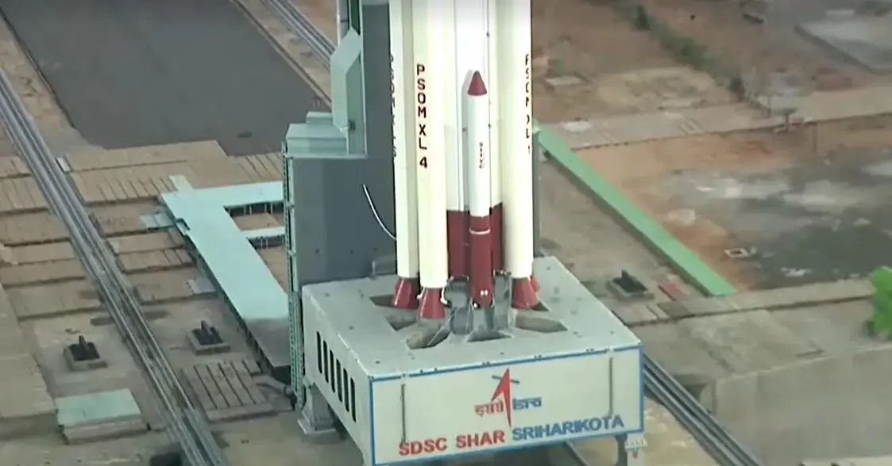
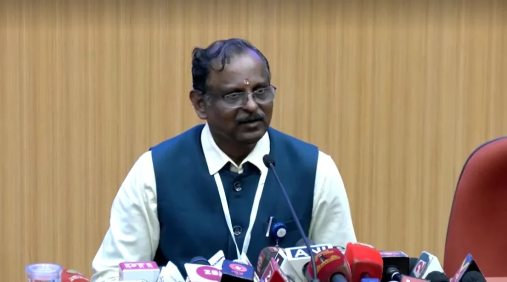

18 ພຶດສະພາ – ອົງການວິຈັຍອວກາດຂອງອິນເດຍ ຫຼື ISRO ໄດ້ແຈ້ງວ່າ ການປ່ອຍຈະຫວດເພື່ອນຳດາວເທືອນສຳຫຼວດໂລກເຂົ້າສູ່ວົງໂຄຈຣໃນມື້ນີ້ ບໍ່ປະສົບຜົນສຳເລັດ.
ທ່ານວີ ນາຣາຢານັນ ປະທານອົງການ ISRO ໄດ້ແຖລງຂ່າວທີ່ສູນອາວະກາດ ສຕີດທະວັນ ໃນເມືອງສີຣີຫຣິໂກຏ ລັດອານທະລະປະເທດ ທາງຕະວັນອອກສຽງໃຕ້ຂອງອິນເດຍ ວ່າ ໃນມື້ນີ້ມີຄວາມພະຍາຍາມປ່ອຍຈະຫວດ PSLV-C61 ຊຶ່ງເປັນຈະຫວດ 4 ຂັ້ນ ເພື່ອນຳດາວເທືອນເຂົ້າສູ່ວົງໂຄຈຣ. ຂັ້ນທີ 1 ແລະ 2 ຂອງຈະຫວດເຮັດວຽກຕາມປົກກະຕິ ແຕ່ໃນຂັ້ນທີ 3 ຊຶ່ງເປັນລະບົບມໍເຕີ້ໃຊ້ແຊັ່ງເຊື້ອເພີງແຂງ ກັບພົບວ່າ ແຮງດັນໃນຫ້ອງເຄື່ອງຂອງມໍເຕີຕົກ, ເປັນເຫດໃຫ້ພາລະກິດການປ່ອຍຈະຫວດຄັ້ງນີ້ ບໍ່ປະສົບຜົນສຳເລັດ. ISRO ກຳລັງຢູ່ໃນຂະບວນການສຶກສາສິ່ງທີ່ເກີດຂຶ້ນ ແລະຈະອອກມາແຖລງລາຍລະອຽດໃຫ້ໄວທີ່ສຸດ.
